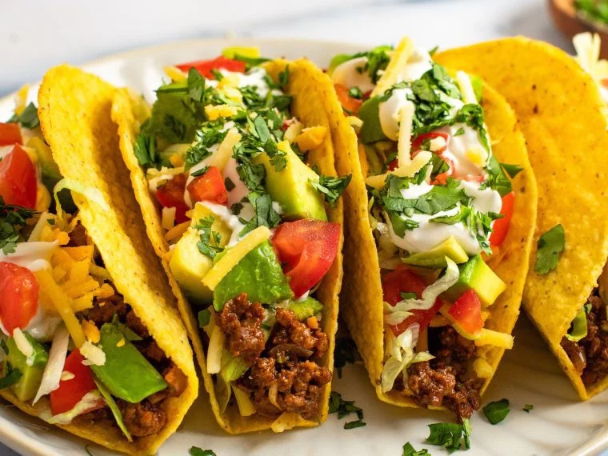
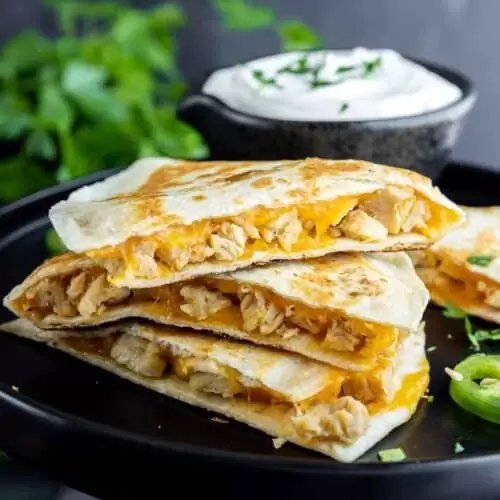

 A taco is a traditional Mexican dish consisting of a small hand-sized corn- or wheat-based tortilla topped with a filling. The tortilla is then folded around the filling and eaten by hand. A taco can be made with a variety of fillings, including beef, pork, chicken, seafood, beans, vegetables, and cheese, and garnished with various condiments, such as salsa, guacamole, or sour cream, and vegetables, such as lettuce, coriander, onion, tomatoes, and chiles.[1] Tacos are a common form of antojitos, or Mexican street food, which have spread around the world.
 A quesadilla, Mexican diminutive of quesada is a Mexican dish consisting of a tortilla that is filled primarily with cheese, and sometimes meats, spices, and other fillings, and then cooked on a griddle or stove.[3] Traditionally, a corn tortilla is used, but it can also be made with a flour tortilla.